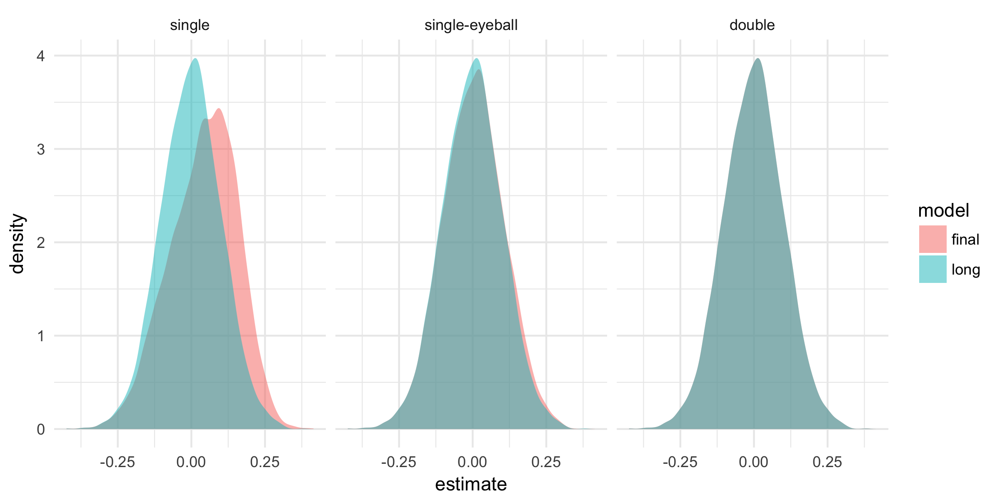
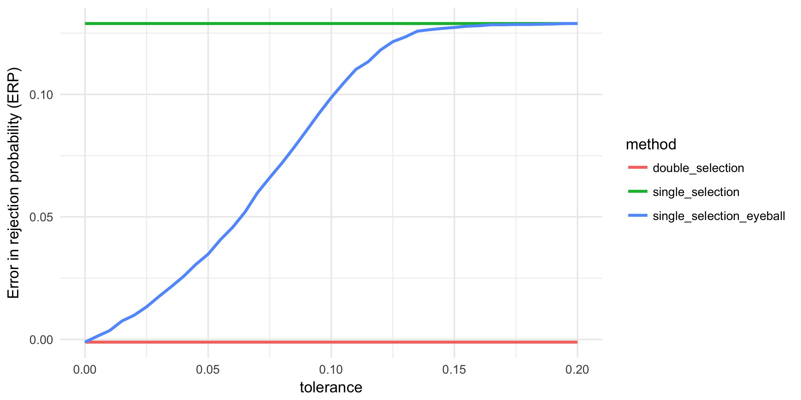
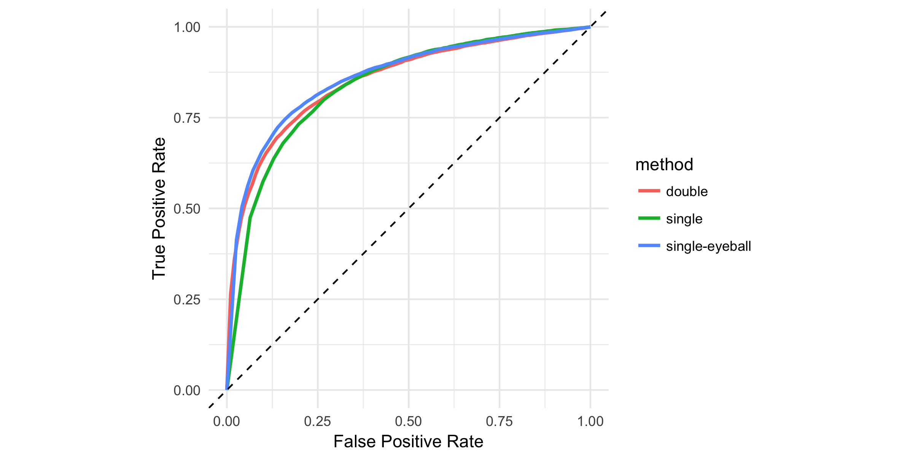

How to select controls if you are interested in a causal effect?
Posted on Thu 06 July 2017 in blog • 6 min read
This is a joint post with my friend, Sandor Sovago. His passion was essential for ending the long hiatus on this blog.
Let’s suppose you want to learn about the effect of legalized abortion on crime. The differences in abortion rates between states in the U.S. offer great variation to study the question. However, states also differ along other dimensions. For example, per capita income might predict the crime rate, and it may also be related to the abortion rate. Thus, income is a natural candidate to control for when trying to estimate the true effect of abortion on crime. However, it is easier said than done. When considering to include a control, you face a trade-off: failing to control for income may bias your estimate (omitted variable bias), whereas including it as an irrelevant control may make it noisy.
In this post, we investigate the problem of variable selection by running simulations in R (see the code on GitHub). The idea came from the Big Data Econometrics summer course held by Victor Chernozhukov and Chris Hansen which we had the privilege to participate in.
The key message is that the standard practice of deciding about controls — running a t-test on the potential control — is very dangerous. More specifically, it leads to biased estimates and too optimistic standard errors. We can avoid these problems by taking into account the correlation between the treatment and the control variables as well. However, this more sophisticated variable selection method sacrifices power.
Let’s consider the following model:
where \(Y\) denotes the outcome (crime rate), \(D\) is the treatment (abortion rate), and \(X\) is a control variable (per capita income). The parameter of interest is \(\alpha\). To keep things simple, let’s assume that the error terms \(\varepsilon\) and \(\nu\) are uncorrelated and follow a joint normal distribution. We consider a sample size of 100, and assume that the treatment and control variable are highly correlated (\(\gamma = 0.8\)). (The choice for the sample size might be strange for talking about “big” data. We can also think of this problem as having a very high dimensional space of potential control variables. We mimic the high dimensional big data case by considering a simple case with small data.)
The question we are interested in is whether we would like to include the control \(X\) in the regression when estimating the effect. We simulate data and estimate both the long (control included) and the short (control omitted) regressions.
The standard practice of overcoming the variable selection problem, called post-single-selection, is to first estimate the long regression, then perform a t-test on the coefficient of the included control, and then estimate the model that corresponds to the conclusion of the t-test.
A more nuanced approach is to complement post-single-selection with an “eyeball” test: if the estimates of the short and long regressions are sufficiently close to each other, then we conclude that the correlation between the treatment and control is small, and prefer the short model.
Belloni et. al (2014) - hereafter BCH - propose a more conservative selection approach, called post-double-selection. Post-double-selection consists of three steps. First, test if the control variable explains the treatment variable. Second, estimate the long regression, and test if the control variable’s coefficient is significantly different from zero. Third, keep the control variable in the model, if either of the previous steps yielded a significant coefficient estimate. Intuitively, we exclude the control variable from the model only if the correlation between the control and the treatment is zero and the control does not have a direct impact on the outcome. BCH show that double selection results in an unbiased estimate of the treatment effect.
To illustrate BCH’s findings, we simulate the model 10,000 times. We assume that the effect that we are interested in is zero (\(\alpha = 0\)) but the control variable has a small effect (\(\beta = 0.2\)). We estimate the long and the short model as well, and perform variable selection using post-single selection, with and without eyeballing, and post-double-selection.
The figure below compares the distribution of the parameter estimates of the long model, an unbiased estimate for \(\alpha\), and the post-selection estimates for different selection methods. The post-single-selection estimator is biased, as also shown by BCH. The intuition is that the multicollinearity between \(D\) and \(X\) makes the estimates imprecise, hence we fail to reject the null that the control does not have a direct effect on the outcome. Thus, post-single-selection favors the short model, which entails omitted variable bias.
Single selection complemented with the eyeball test (using a cutoff of 0.05) highly improves the results, but still yields biased estimates. The post-double-selection estimator is unbiased. 
Below you can see the standard errors of the correct long model compared to the post-selection standard errors for each selection method across simulations. Post-single-selection, with or without eyeballing, favors the short model too often, corresponding to overly optimistic standard errors of the main estimate. In contrast, post-double-selection yields correct standard errors. 
Given the biased estimates and unrealistic standard errors of the post-single-selection estimates, we investigate the size of the test on our parameter of interest. With the standard significance level of 5 percent, we would expect to reject the zero null hypothesis in 5 percent of the cases even if there is no effect. The figure below displays the error in the rejection probability (ERP, difference between the actual rejection rate and the theoretical 5 percent) for each selection method, as a function of the tolerance level of the eyeball-test. Since post-single-selection and post-double-selection do not depend on the tolerance-level, their ERP is constant. The figure illustrates that post-double-selection has the right size, whereas the ERP is above 16 percent for post-single selection, indicating that post-single-selection over-rejects (around four times). Post-single-selection complemented with the eyeball test provides a smooth transition between post-single- and post-double-selection. Importantly, if the eyeball test is not conservative enough, it can also lead to serious over-rejection. 
Until now, we assumed that the true effect is zero. However, in reality, we do not know that. It is an equally important question to see whether we are able to find the effect if it is there. We simulate new data with a positive treatment effect where the control is irrelevant (\(\alpha = 0.2, \beta = 0\)). On this data we can study the power of the variable selection methods. The power curves below reiterate that post-double-selection gets the size of the test right, but, more importantly, it also shows that we lose power relative to post-single-selection. 
To summarize the trade-off between the size and the power of the variable selection methods, let’s compare true and false positive rates in a ROC-type graph. Combining the simulated data from both states of the world we can analyze whether our methods find the effect when it is there (true positive) or wrongly find an effect when it is not there (false positive). The graph illustrates that post-single-selection yields too many false positives but more true positives as well. Post-double-selection is the most conservative and finds the effect the least frequently. 
To sum up, post-double-selection can cure the problems (bias, over-rejection) of standard variable selection practices, but sacrifices power in exchange for that.
UPDATE. Chris drew our attention to a flaw of our power comparison; we did not control for the difference in the effective sizes of the tests. There is an inherent trade-off between size and power: if you increase your significance level, you are going to reject more often (less false positives) but that applies for true hypotheses as well (less true positives). As the effective size of the test for post-single-selection is larger than 5% (see the ERP graph), it implies a stronger power in itself. We mixed up this inherent trade-off between size and power with the trade-off of which method to use.
The graph below replicates the ROC-type graph of the post with varying significance levels. Here, we can compare the power of the methods for the same effective sizes (fixed level of false positive rate). The post-single-selection clearly under-performs post-double-selection: for every rate of false positives, it finds less true positives. Post-single-selection with eyeball testing fares about the same as double-selection, especially in the relevant ranges (false positive rate under 10 percent).
This finding changes our previous conclusion. Post-double selection is definitely an improvement upon standard variable selection practices: it cures the problems of bias and over-rejection without sacrificing power.